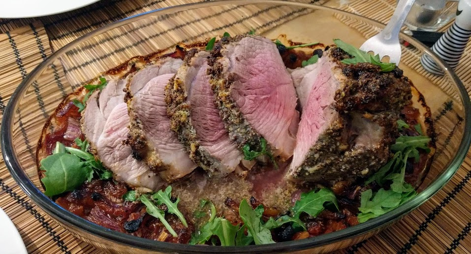

Rôti de porc ambré

Pour 6 personnes :
- Un rôti de porc d'un kilo
- Une bouteille (25/33cL) de bière ambrée, douce
- Quatre oignons rouges
- Deux gousses d'ail
- Une poignée d'abricots secs
- Deux cuillères à café de miel liquide (ou de sucre roux)
- Une grosse cuillère à soupe de moutarde
- Une cuillère à café d'origan séché
- (Facultatif) une poignée de roquette
- Sel, poivre
- Mettre le rôti dans un plat à four. C'est une bonne idée de faire ça un peu à l'avance (~une heure…), pour qu'il ne soit pas trop froid quand on le met dans le four.
- Éplucher et émincer les oignons, couper les abricots secs en petites lamelles. Les disposer autour du rôti, et ajouter la bière.
- Éplucher et écraser l'ail. Le mélanger avec l'origan, la moutarde et le miel dans un petit bol. Saler, poivrer, et badigeonner le porc du mélange.
- Mettre au four pendant environ 1h30 à 180°C, en partant à froid (ne pas préchauffer le four à l'avance). Vérifier de temps en temps la cuisson et arroser avec le jus au fond.
- Juste avant de servir (chaud, évidemment), on peut mettre une poignée de roquette autour du porc, pour que ça "tombe" dans la sauce et que ça fasse joli. Servir avec des légumes au four, par exemple.